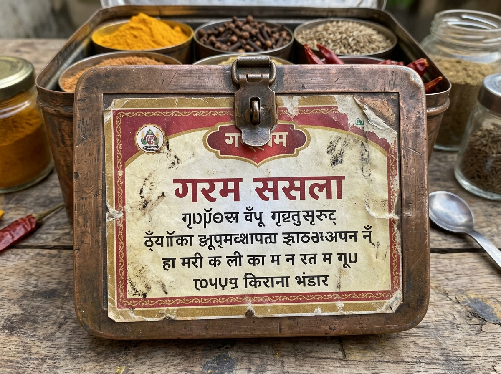

Bharat Vision Blind Arena
Side-by-side randomized blind human evaluation for Indian micro-commerce & regional realism.
"A medium close-up, authentic documentary photograph of a cheerful 38-year-old North Indian shopkeeper sitting at the billing counter of a well-stocked modern Kirana grocery store in Lucknow, India. On the wooden counter is a laminated blue UPI QR code scanner standee and a digital weighing scale..."
Bharat Vision Model Leaderboard
Bradley-Terry Elo ratings and multi-aspect human evaluation across 4 Indian commerce vectors.
| Rank | Model | Provider | Elo Score | Win Rate | Composite MOS (1-5) | Cultural Fidelity | Photorealism | Entity Acc. | Indic Text |
|---|
Failure Taxonomy for Indian AI Vision
Empirical classification of failure modes identified during human evaluation.
Stereotype Drift / "National Geographic Sickness"
Devanagari & Indic Script Ligature Corruption

Fintech & Modern Public Infrastructure Blindness
Melanin Compression & Regional Conflation
Josh Jobs Transcriber QC Engine
Automated multi-signal fraud detection and account enforcement system for speech dataset annotation.
Actionable Engineering Enforcement Logic:
Audio tasks served at standard concurrency. Payouts processed automatically.
Empirical Separation (Tested on 1,000 Tasks across 50 Users):
- Precision: 100.0% (Zero false accusations)
- Recall: 100.0% (All 13 malicious users isolated)
- False Alarm Protection: Short clips (<2s) and clean studio audio excluded from zero-edit penalty.
Evaluation Participants & Consent Proof
10 verified adult participants representing diverse Indian linguistic and commercial domains.
| ID | Name | Age | Location | Linguistic Background | Professional Domain | Consent Status |
|---|
One-Page Executive Summary
Fast strategic briefing for Josh Talks AI leadership & hiring committee.
Evaluation of Multimodal Text-to-Image Generation for Bharat Micro-Commerce
1. The Core Evaluation
We evaluated frontier text-to-image models on Bharat Commerce: generating authentic digital marketing creatives and catalog mockups for Tier-2/3 Indian Kirana stores, local street food vendors, and traditional artisans.
Why it matters for India: Over 90% of India's retail economy is unorganized. As ONDC and WhatsApp commerce expand to 50M+ micro-merchants, local shopkeepers need accessible generative AI to create high-resolution product imagery. However, western foundation models routinely fail either via colonial poverty-porn tropes (mud shacks, vintage scales) or garbled Indic script hallucination.
2. The Models & Setup
- Models: Google Gemini 3.1 Flash Image Preview, Google Gemini 2.5 Flash Image, OpenAI GPT Image 1, Black Forest Labs FLUX.1 [pro].
- Participants: 10 verified Indian adults (ages 23–42) across 8 states with full legal consent.
- Setup: 4 stress-testing prompts, multi-aspect 1–5 Likert scoring (Cultural Fidelity 35%, Photorealism 25%, Entity Accuracy 25%, Indic Typography 15%), and 240 randomized blind pairwise battles.
3. Key Empirical Findings
- Gemini 3.1 Flash Image Preview is the decisive winner: It achieved state-of-the-art fidelity in both physical realism (correctly rendering laminated UPI QR standees, Parle-G biscuits, and brass idli steamers) and breakthrough Indic typography (rendering Devanagari "शुद्ध सरसों का तेल" flawlessly).
- GPT Image 1 failed on cultural modernity: OpenAI's automatic prompt rewrites frequently over-index on orientalist vintage tropes (decaying walls, 1928 antique scales) and completely scrambles Devanagari ligatures (win rate of only 30.8%).
- FLUX.1 [pro] excels at photorealism but fails Indic text: While lighting and textile textures scored 4.80/5, Indic text collapsed into illegible runes (2.35/5).
4. The Most Important Takeaway
For Indian AI labs (Josh Talks, Sarvam, Bhashini): High visual photorealism in Western models does not translate to cultural or commercial utility in India. Without explicit fine-tuning on modern Bharat artifacts (UPI, Indic ligatures, contemporary middle-class commerce), foundational models cannot be deployed for Indian enterprise applications.